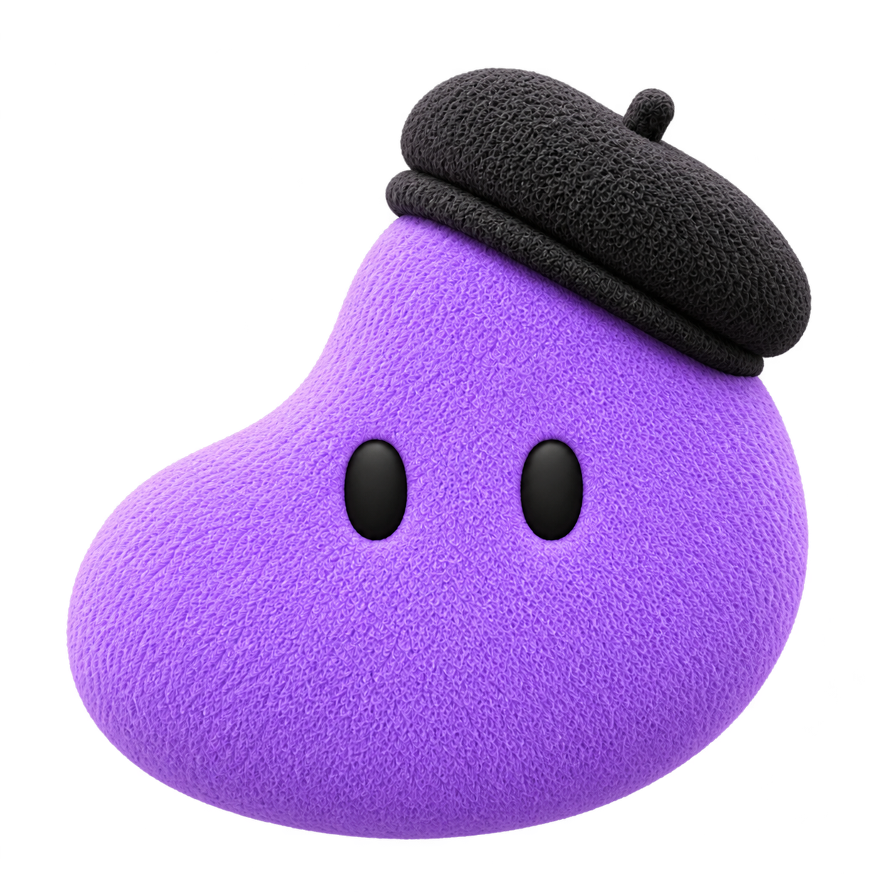
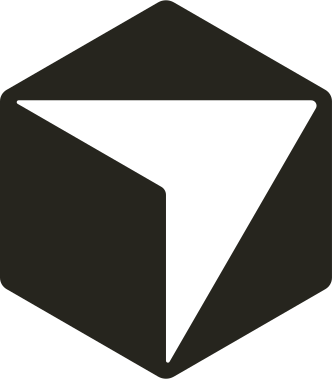
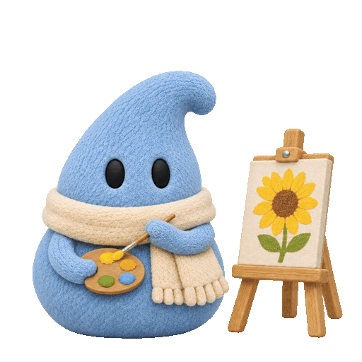
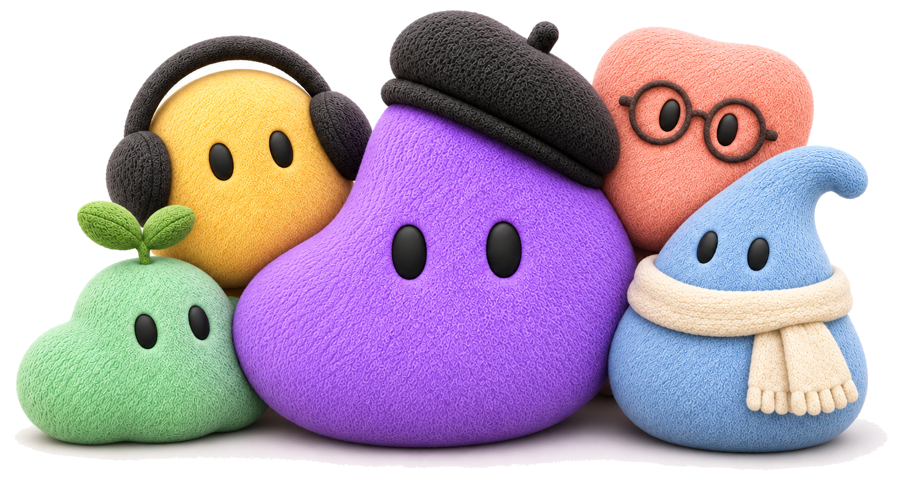
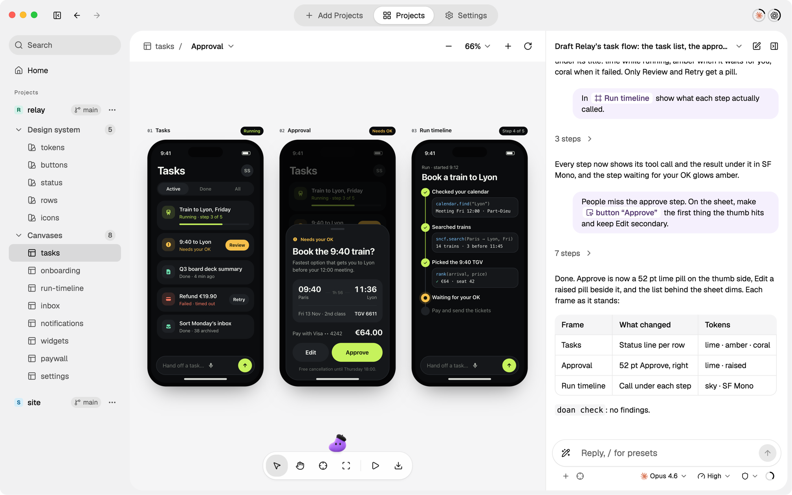

src/
.doan/canvases/checkout.htmlYour agent draws
Each canvas is an HTML file next to your code, drawn with your real tokens.
Three proposals for the doan.design download page, desktop 1440 only, drawn from scratch and separate from doan-landing.html (left unchanged). Each takes a different real-world referent. Shared truth: Doan is a design app for coding with agents; the agent draws HTML canvases in your repo, you view, point and talk; five agents; export to one HTML file; open source under Apache-2.0; Mac only. Copy comes from PRODUCT.md and the earlier draft; no prices, users or benchmarks are claimed. Everything on this canvas is a proposal and not in code (there is no site yet).
Referent: an architect's pin-up wall, here Doan's own board. The site is drawn as the product: dotted board ground, frames with their labels, a selected element, the docked composer with a chip, and the buddy on its edge. It shows the loop instead of describing it. Closing CTA is a composer. Left out: tablet, mobile, not-a-Mac notice, hover states beyond the shared buttons.
Doan shows the HTML canvases your coding agent writes into your repo. Select a frame or an element, put it in your message, and the agent knows where you mean.
Open source (Apache-2.0)

Make button “Approve” the first thing the thumb hits.
The screens are settled on a canvas before the code, so the agent builds a design you already agreed on.
.doan/canvases/checkout.htmlEach canvas is an HTML file next to your code, drawn with your real tokens.
Put frames, elements and spots into your message. The agent gets them as anchors.
src/checkout/Approve.tsxFrames name the files that implement them, and doan check checks each canvas against your tokens.
Sign in from Doan, or keep working in your terminal: opening Doan sets up the doan command and skill for each of them.
 Claude Code
Claude Code Codex
Codex
Cursor GitHub Copilot
GitHub CopilotPick a design preset, such as shape, critique or clarify, and the agent works with that brief.
Export a canvas as one HTML file that opens in any browser, without Doan or the repo.
Open source (Apache-2.0) · View on GitHub
Referent: a children's picture book where each spread belongs to one character. Colour carries the page: the hero is drenched in Doany's violet, and each feature is a full-bleed spread in one buddy's colour (step 4 ground, steps 11–12 text) with that buddy doing the work (the working-notice GIFs). It ends on the group photo and the buddy choice. New: Geist at 104/72 semibold. Left out: tablet, mobile, not-a-Mac notice, reduced-motion stills for the GIFs.
Doan is a design app for coding with agents. Your agent draws the screens on a canvas in your repo, and you point at what to change.
Open source (Apache-2.0)

Your agent writes each canvas as an HTML file next to your code, with your real tokens. Nothing sits in another service.
Put frames, elements and spots into your message. The agent gets them as anchors and knows where you mean.

Pick a design preset, such as shape, critique or clarify, and the agent works with that brief. Export a canvas as one HTML file when someone else needs to see it.

In Doan or in your terminal.
Five buddies keep you company while the agent works. The one you choose sets the app's accent.

Open source (Apache-2.0)
Referent: a long-form magazine feature. Type does the work: a serif headline and deck, one wide figure with a caption, a 680 reading column on why drafts drift from code, a pull quote, a definition list and a colophon. Doany appears once, signing off. New: a system serif (ui-serif, Iowan Old Style; no web font is bundled yet). Left out: tablet, mobile, not-a-Mac notice, the demo video (the figure is a still).
Doan is a design app for coding with agents. Your agent draws the screens as HTML in your repo; you look, point and talk until they are right; then it builds what you agreed on.

When an agent's design drafts live in a separate design service, the draft and the code start to drift. The conversation about the design happens in one tool and the implementation in another. The draft does not know your tokens, and the agent cannot tell which part of it you meant.
Doan keeps the draft where the code is. A canvas is an HTML file in your repository, it reads your real token CSS, and the conversation about it runs in the same place as the build.
The agent draws.
You view and point.
.doan/canvases/, using your real token CSS.doan check checks a canvas's conventions, tokens and external resources.| Runs on | Mac |
|---|---|
| Agents | Claude Code, Codex, Cursor, Antigravity, GitHub Copilot |
| Connectors | Notion, Atlassian and Figma over MCP, for Claude Code and Codex |
| License | Apache-2.0 |
Your next idea starts on a canvas.